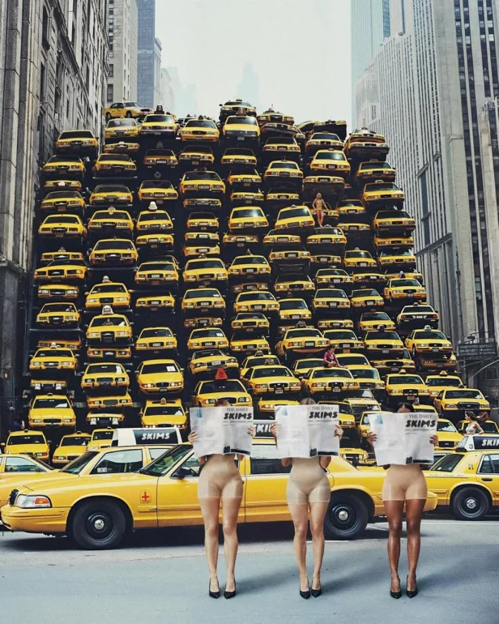

SKIMS покоряет Нью-Йорк: мастерский прогрев с помощью ИИ и ледяных скульптур
Бренд SKIMS, известный своими корректирующими боди и инклюзивным подходом, открыл свой долгожданный флагманский магазин в Нью-Йорке. И, конечно же, открытие не обошлось без эффектной рекламной кампании, которая, кажется, произвела фурор в мире визуального маркетинга.
Открытие флагмана и загадочная кампания
SKIMS, кажется, задали новый стандарт для рекламных кампаний, приуроченных к открытию новых магазинов. Они не просто объявили об открытии, а устроили настоящий перформанс, используя нейросети настолько искусно, что даже неискушённые в ИИ люди не сразу поняли, что перед ними не обычные фотографии. Бренд вновь продемонстрировал своё умение работать с визуалом, создавая реалистичные и одновременно интригующие образы.
Интрига
SKIMS отказались от банальных анонсов, выбрав интригующие посты с одной картинкой и надписью «SKIMS loves New York», что создало ажиотаж и заставило гадать о планах бренда. Маркетологи не раскрывали всех карт, оставив место для фантазии. Центром внимания кампании стало корректирующее боди, но кульминацией стала ледяная скульптура женского тела в нём. Появляясь повсюду, скульптура создавала сюрреалистичную атмосферу и вызывала недоумение. Что это? Отсылка к магазину? Уловка? Этот элемент привлёк внимание и породил множество вопросов.
Секретный соус: продуманный прогрев
«Секретный соус» кампании SKIMS — не в простом объявлении «скоро», а в постепенном, продуманном прогреве аудитории. Бренд не раскрывал всех карт сразу, а подводил к открытию магазина постепенно, используя приемы интриги и создания загадочной атмосферы. Это отличный пример того, как создать ажиотаж вокруг нового релиза, не прибегая к прямолинейной рекламе. SKIMS в очередной раз доказали, что креативность, внимание к деталям и умение создавать интригу — это ключи к успеху в современном мире маркетинга.